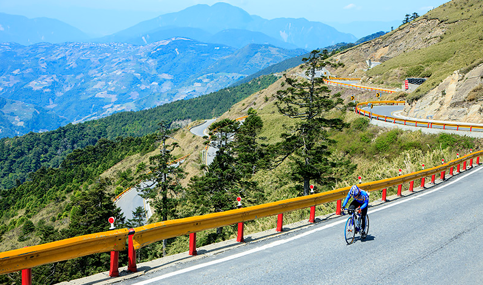
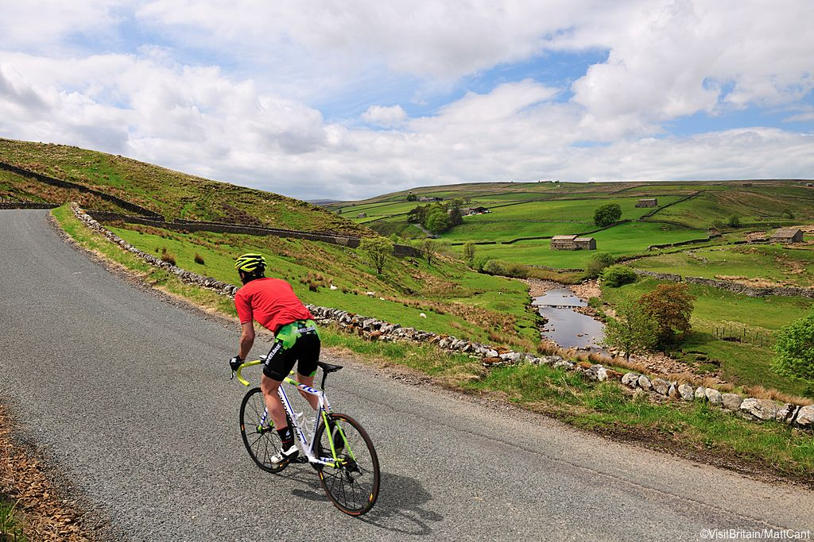
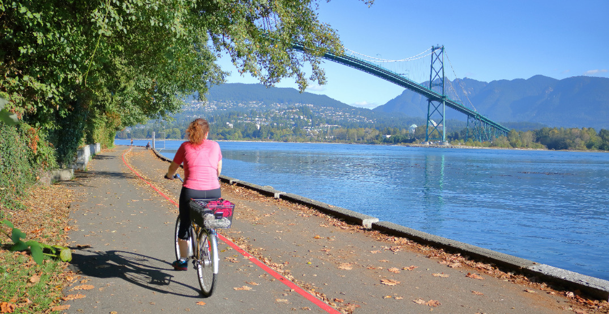

One of my dream is to have a bike trip on the most beautiful place all around the world!
There are so many beautiful place to go in this world, while I think riding on the bike is the best way to experience all the stunning landscape. It can be extremely exhausting to ride for a long distance with steep slope, but it comes with a great sense of accomplishment. It feels like climbing the mountain, when you reach the top of the mountain, the beautiful landscape makes you feel great and think that all the effort are worthy. That's why I would like to travel different places with a bike, and below is some of the examples that are good to have a bike tour.
| Location | Introduction | Video |
|---|---|---|
| Taiwan | This adventure takes you from bustling Taipei to some of the most spectacular scenery on the stunning East Coast. You’ll experience Taiwanese history and culture, visit the minority indigenous tribes of Sun Moon Lake, walk through historic Lukang, join in the morning prayers with the monks of Foguangshan and perhaps enjoy a dip in the hot springs |  |
| Yorkshire Dales, England | Road cycling in Yorkshire is renowned for its ferocious gradients, often inclement weather and wild scenery. It has been hitting the headlines of the cycling press in recent years – and has a growing reputation as one of the best areas of the country to ride a road bike. |  |
| Vancouver, Canada | Embraced by the Coast mountains to the North and the Pacific Ocean to the West, Vancouver is a city that has cherished its close proximity to the Great Outdoors. Leave the hustle and bustle of the crowded city behind and embark on an adventure Into The Wild. |  |